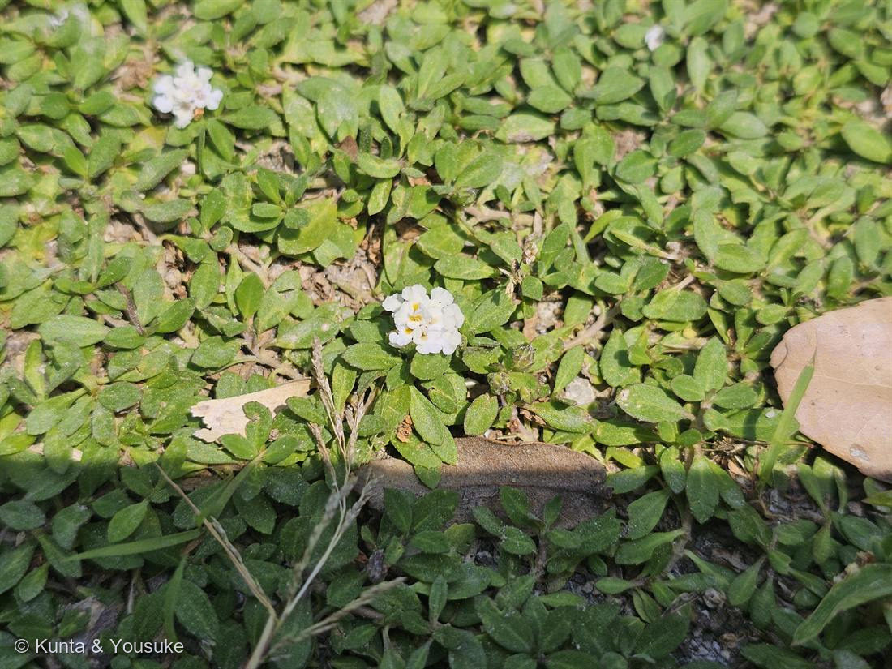
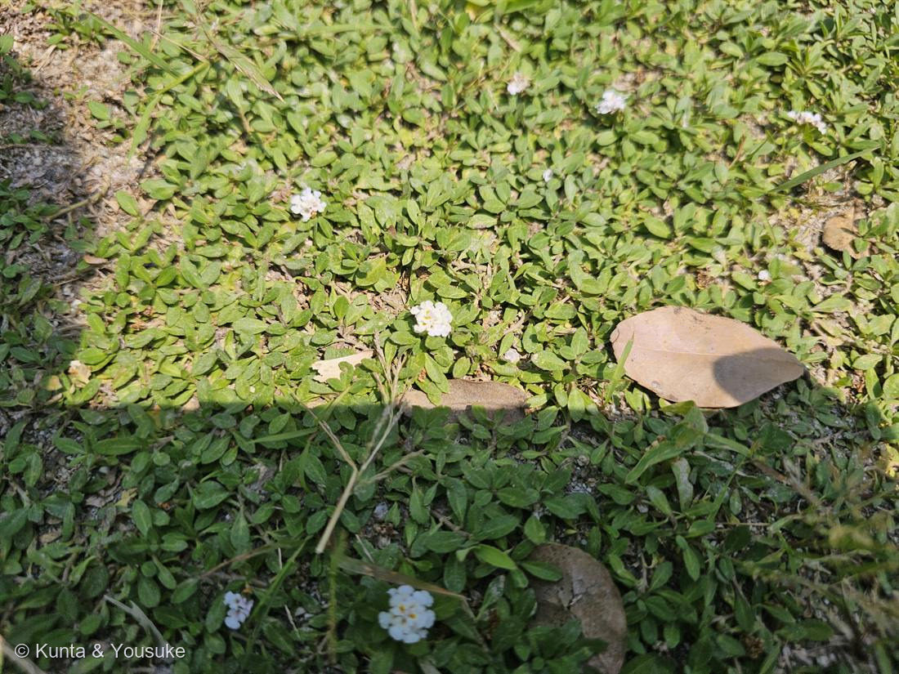

地図を読み込んでいるよ…
🔍 写真も地図も、押しているあいだ拡大して見られるよ（スマホは指を置いてすこし待ってね）。
🌍 の地図＝この子がもともと自生している場所を緑に。南アメリカ原産。1926年（昭和初年）に渡来し、宮崎県や琉球諸島に帰化。地被植物としてよく植えられ、乾いた日なたの荒れ地や駐車場にも広がる。
⭐南アメリカ原産のヒメイワダレソウ。1926年（昭和初年）に日本へ来て、宮崎県や琉球諸島に帰化。⚠日本は塗っていない——もとの故郷じゃなくて、地被に植えられたり逃げ出したりして広がっている外来の子（この株も、乾いた駐車場を覆っていた）。⚠南アメリカも全部じゃなくて、一部が原産なのに、大陸が広く緑になっているよ。
⚠ 地図は国（日本と中国だけ県・省）までしか塗れないから、ほんとうの分布より広く見えていることがあるよ。地図はだいたいの場所。正確なところは、上の文を見てね。
ヒメイワダレソウ（姫岩垂草）
Phyla canescens (Kunth) Greene
別名 · クラピアに酷似／リッピア／ 中央が黄色い小さな花束／ 地面を這う地被／ ⚠重点対策外来種／ 原産 · 南アメリカ
クマツヅラ科 · Verbenaceae（イワダレソウ属 Phyla）── 004ランタナと同じ科
燻太さんの「どこで見つけた？」が、名前を決めた「日差しが強い、乾燥した土の駐車場だったよ。」──海岸じゃない＝在来イワダレソウが消えて、乾いた荒れ地に広がる帰化のヒメイワダレソウが最有力に。
⭐⭐⭐ 燻太さんの「誰を呼んでいるんだろう？」── 答えは、ミツバチ
- 燻太さんの言葉：「地面すれすれで、白い花束を作ってる。花の中央は黄色、誰を呼んでいるんだろう？」──その問い、この花のいちばん大事なところを突いてるよ。
- ⭐中央の黄色は「蜜標（みつしるべ／nectar guide）」。「ここに蜜があるよ」と、送粉者に道しるべを出しているんだ。白い花束のまん中に、黄色い的（まと）。
- ⭐⭐呼んでいる相手は、ミツバチ。ヒメイワダレソウには「ニホンミツバチやセイヨウミツバチの頻繁な訪花が観察されている」（Wikipedia）。──地面すれすれの小さな花束に、ハチがせっせと通ってくる。
- ⭐しかも、この「黄色い的」は、同じ科のランタナと同じ仕掛け：004 ランタナは、咲きたての花が黄色くて、受粉がすむと赤に変わる＝「まだ蜜があるのはどれか」をハチに教える色の信号。──この子の「まん中が黄色」も、その仲間の合図なんだ。
⭐⭐⭐ 「白い花束」の正体 ── ミニチュアのランタナ
- ⭐この子は、クマツヅラ科イワダレソウ属（Phyla）。──004 ランタナ・006 コバノランタナ・076 ビジョザクラと同じ、クマツヅラ科（4人目）。
- ⭐⭐「白い花束」は、短い穂に、小さな花（長さ約2.5mm）が輪になって集まったもの（Wikipedia）。花は短い花筒＋5つの花びら状の裂片・白〜淡い桃色、中心は黄色。──これ、004ランタナの半球の花のかたまりを、うんと小さくして地面に貼りつけたみたい。同じ科だから、花のつくりがそっくりなんだ。
- ⭐茎が地面を這って、マット状に一面を覆う。「地面すれすれ」＝地被植物（グラウンドカバー）の姿。芝生の代わりに植えられることが多い。
⭐⭐⭐ 同定 ── 燻太さんの「駐車場」で、名前が決まった
- ヒメイワダレソウ（Phyla canescens）が最有力。⭐決め手は、燻太さんが教えてくれた「場所」だった。
- 属（イワダレソウ属 Phyla）は、花のつくりで確定。問題は、そっくりな3つのうちどれか、だった：①ヒメイワダレソウ（南米原産の帰化）／②クラピア（イワダレソウから作った不稔の園芸品種）／③在来のイワダレソウ（Phyla nodiflora・日本の海岸）。
- ⭐⭐燻太さんの証言：「日差しが強い、乾燥した土の駐車場だったよ。」──この一言で、名前が動いた。
・⭐まず、③在来のイワダレソウが消える。あの子は海岸の子。ここは海岸じゃなくて、内陸の駐車場。
・⭐⭐そして、①ヒメイワダレソウが最有力に。この子は「乾いた日なたの荒れ地に、雑草のように這って広がる」帰化植物。日差しの強い乾いた駐車場を、マット状に覆っている姿は、まさにヒメイワダレソウの生きかた。 - ⚠ただし、②クラピア（植えられた不稔品種）の可能性は、わずかに残す。見た目がそっくりだから。確定には「種ができるか（クラピアは種をつけない）」を見ればいい。──でも駐車場を雑草的に広がっているなら、植えられたクラピアより、逃げ出して増えたヒメイワダレソウのほうが、ずっとありそう。
- ⭐087 ヤマモモ・078 モクビャッコウと同じ。「どこで見つけた？」が、いつも最後の決め手だった。写真からは読めない「場所」を、燻太さんが持っている。
⚠ ヒメイワダレソウは「重点対策外来種」
- ⚠ヒメイワダレソウ（Phyla canescens）は、「生態系被害防止外来種リストの重点対策外来種」に指定されている（Wikipedia）。
- ⭐理由は、繁殖力が強くて広がりやすく、在来のイワダレソウと交雑して「遺伝子汚染」を起こすおそれがあるから。──かわいい地被の花が、じつは在来の親戚をおびやかすことがある。乾いた駐車場を平気で覆っていく、その強さの、裏返し。
- ⭐だから、おまけ植物は「在来のイワダレソウ」。海岸にいる、野生の親戚。この子（外来）と、海の子（在来）。似ているけれど、片方は守りたい在来種なんだ。──この対比を、燻太さんに見てほしい。
名前と学名の由来 ── Phyla と、灰白色の毛
- ⭐属名 Phyla は、ギリシャ語の「群れ・種族（phylon）」から＝小さな花が穂に群れて集まる姿。種小名 canescens は「灰白色を帯びてくる」＝葉や茎の細かい毛の色。
- 和名「ヒメイワダレソウ」＝姫（小さい）＋岩垂草（岩に垂れて這う草）。地面を這うマットの姿そのもの。
この植物のこと
- クマツヅラ科イワダレソウ属の、地面を這う多年草。分岐が多く、肉厚の小さな葉をつける（Wikipedia）。花期は初夏〜秋と長い。
- ⭐送粉者のこと（もう一度）：中心の黄色い蜜標に、ミツバチが通う。──「地面すれすれの、いちばん低いところで咲く花束」に、いちばん働き者のハチが来ている。燻太さんの「誰を呼んでいる？」は、そのまま生きものの物語だった。
- ⭐グラウンドカバーとしての人気と、その裏側：背が低く、踏まれても強く、花期が長い。だから芝生の代わりに植えられる。──でも、その「強さ」が、逃げ出すと止まらない理由にもなる。乾いた駐車場を覆えるほど強い子は、野に出ると在来種を押しのけてしまう。
参考：Wikipedia「ヒメイワダレソウ」（Phyla canescens・クマツヅラ科イワダレソウ属・南アメリカ原産／1926年渡来・宮崎や琉球に帰化・分岐が多く肉厚の小さな葉・花は短い花筒＋5裂片・長さ約2.5mm・白や淡い桃色・中心は黄色・ニホンミツバチやセイヨウミツバチの頻繁な訪花・地被植物として利用／クラピアは種をつけないよう改良した園芸品種・生態系被害防止外来種リストの重点対策外来種／在来イワダレソウへの遺伝子汚染が懸念）